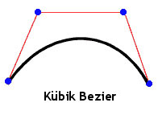
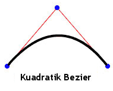
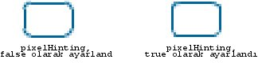
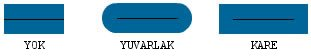

| Paket | flash.display |
| Sınıf | public final class Graphics |
| Miras Alma | Graphics |
| Dil Sürümü: | ActionScript 3.0 |
| Çalışma Zamanı Sürümleri: | AIR 1.0, Flash Player 9, Flash Lite 4 |
graphics özelliği içerir. Şunlar, kullanım kolaylığı için sağlanan yardımcı işlevler arasında yer alır: drawRect(), drawRoundRect(), drawCircle() ve drawEllipse().
Doğrudan ActionScript kodundan bir Graphics nesnesi oluşturamazsınız. new Graphics() öğesini çağırırsanız bir istisna atılır.
Graphics sınıfı sondur, alt sınıflara ayrılamaz.
 Miras Alınan Genel Özellikleri Gizle
Miras Alınan Genel Özellikleri Gizle Miras Alınan Genel Özellikleri Göster
Miras Alınan Genel Özellikleri Göster| Yöntem | Tanımlayan: | ||
|---|---|---|---|
beginBitmapFill(bitmap:BitmapData, matrix:Matrix = null, repeat:Boolean = true, smooth:Boolean = false):void
Çizim alanını bitmap görüntüsüyle doldurur. | Graphics | ||
Diğer Graphics yöntemlerine yapılan sonraki çağrıların (lineTo() veya drawCircle() gibi) çizim sırasında kullandığı basit bir tek renkli dolguyu belirtir. | Graphics | ||
beginGradientFill(type:String, colors:Array, alphas:Array, ratios:Array, matrix:Matrix = null, spreadMethod:String = "pad", interpolationMethod:String = "rgb", focalPointRatio:Number = 0):void
Nesne için diğer Graphics yöntemlerine (lineTo() veya drawCircle() gibi) yapılan sonraki çağrılar tarafından kullanılacak bir degrade dolguyu belirtir. | Graphics | ||
Nesne için diğer Graphics yöntemlerine (lineTo() veya drawCircle() gibi) yapılan sonraki çağrılar tarafından kullanılan bir gölgelendirici dolgusunu belirtir. | Graphics | ||
Bu Graphics nesnesine çizilmiş grafikleri temizler ve dolgu ve çizgi stili ayarlarını sıfırlar. | Graphics | ||
Kaynak Graphics nesnesindeki tüm çizim komutlarını, çağıran Graphics nesnesine kopyalar. | Graphics | ||
cubicCurveTo(controlX1:Number, controlY1:Number, controlX2:Number, controlY2:Number, anchorX:Number, anchorY:Number):void
Geçerli çizim konumundan, belirtilen bağlantı noktasına kübik bir Bezier eğrisi çizer. | Graphics | ||
Geçerli çizim konumundan (anchorX, anchorY) konumuna geçerli çizgi stilini kullanarak ve (controlX, controlY) öğesinin belirttiği denetim noktasını kullanarak kuadratik bir Bezier eğrisi çizer. | Graphics | ||
Bir daire çizer. | Graphics | ||
Bir elips çizer. | Graphics | ||
Çizim için bir IGraphicsData örnekleri serisi gönderir. | Graphics | ||
Çizim için bir komutlar serisi gönderir. | Graphics | ||
Bir dikdörtgen çizer. | Graphics | ||
drawRoundRect(x:Number, y:Number, width:Number, height:Number, ellipseWidth:Number, ellipseHeight:Number = NaN):void
Yuvarlak köşeli bir dikdörtgen çizer. | Graphics | ||
drawTriangles(vertices:Vector.<Number>, indices:Vector.<int> = null, uvtData:Vector.<Number> = null, culling:String = "none"):void
Genellikle bitmap'leri bozmak ve onlara üç boyutlu görünüm kazandırmak için bir üçgen kümesi oluşturur. | Graphics | ||
beginFill(), beginGradientFill() veya beginBitmapFill() yöntemine yapılan son çağrıdan bu yana eklenmiş olan çizgi ve eğrilere dolgu uygular. | Graphics | ||
 |
Bir nesnenin belirli bir özelliğinin tanımlı olup olmadığını gösterir. | Object | |
|
Object sınıfının bir örneğinin parametre olarak belirtilen nesnenin prototip zincirinde olup olmadığını gösterir. | Object | |
lineBitmapStyle(bitmap:BitmapData, matrix:Matrix = null, repeat:Boolean = true, smooth:Boolean = false):void
Çizgi çizilirken satır konturu için kullanılacak bir degradeyi belirtir. | Graphics | ||
lineGradientStyle(type:String, colors:Array, alphas:Array, ratios:Array, matrix:Matrix = null, spreadMethod:String = "pad", interpolationMethod:String = "rgb", focalPointRatio:Number = 0):void
Çizgi çizilirken kontur için kullanılacak bir degradeyi belirtir. | Graphics | ||
Çizgi çizilirken satır konturu için kullanılacak gölgelendiriciyi belirtir. | Graphics | ||
lineStyle(thickness:Number = NaN, color:uint = 0, alpha:Number = 1.0, pixelHinting:Boolean = false, scaleMode:String = "normal", caps:String = null, joints:String = null, miterLimit:Number = 3):void
lineTo() yöntemi veya drawCircle() yöntemi gibi Graphics yöntemlerine yapılan sonraki çağrılar için kullanılacak bir çizgi stilini belirtir. | Graphics | ||
Geçerli çizim konumundan (x, y) konumuna geçerli çizgi stilini kullanarak bir çizgi çizer; geçerli çizim konumu sonradan (x, y) konumuna ayarlanır. | Graphics | ||
Geçerli çizim konumunu (x, y) konumuna taşır. | Graphics | ||
|
Belirtilen özelliğin bulunup bulunmadığını ve numaralandırılabilir olup olmadığını gösterir. | Object | |
Sprite veya Shape nesnesini (ve isteğe bağlı olarak alt öğelerini) vektör grafiği içeriği açısından sorgular. | Graphics | ||
|
Dinamik bir özelliğin döngü işlemlerinde kullanılabilirliğini ayarlar. | Object | |
|
Bu nesnenin, yerel ayara özel kurallara göre biçimlendirilmiş dize temsilini döndürür. | Object | |
|
Belirtilen nesnenin dize olarak temsil edilen halini döndürür. | Object | |
|
Belirtilen nesnenin temel değerini döndürür. | Object | |
beginBitmapFill | () | yöntem |
public function beginBitmapFill(bitmap:BitmapData, matrix:Matrix = null, repeat:Boolean = true, smooth:Boolean = false):void| Dil Sürümü: | ActionScript 3.0 |
| Çalışma Zamanı Sürümleri: | AIR 1.0, Flash Player 9, Flash Lite 4 |
Çizim alanını bitmap görüntüsüyle doldurur. Alanı doldurmak için bitmap yinelenebilir veya döşenebilir. Siz beginFill(), beginBitmapFill(), beginGradientFill() veya beginShaderFill() yöntemini çağırana kadar dolgu etkin kalır. clear() yönteminin çağrılması dolguyu temizler.
Üç veya daha çok nokta çizildiğinde veya endFill() yöntemi çağrıldığında, uygulama dolguyu oluşturur.
Parametreler
bitmap:BitmapData — Görüntülenecek bitmap'leri içeren saydam veya opak bitmap görüntüsü.
| |
matrix:Matrix (default = null)
matrix = new flash.geom.Matrix();
matrix.rotate(Math.PI / 4);
| |
repeat:Boolean (default = true)true olursa, bitmap görüntüsü döşenmiş biçimde yinelenir. false olursa, bitmap görüntüsü yinelenmez ve bitmap'i aşan dolgu alanları için bitmap'in kenarları kullanılır.
Örneğin şu bitmap'i düşünün (20 x 20 piksel kareli bir desen):
| |
smooth:Boolean (default = false)false olursa, en üstteki bitmap görüntüleri, en yakındaki algoritma ve pikselleştirilmiş görüntü kullanılarak oluşturulur. true olursa, en üstteki bitmap görüntüleri, iki doğrusal algoritma kullanılarak oluşturulur. En yakındaki algoritmayı kullanılarak oluşturma, daha hızlıdır.
|


İlgili API Öğeleri
Örnek ( Bu örnek nasıl kullanılır? )
image1.jpg) kullanır.
LoaderveURLRequestnesneleri kullanılarak görüntü dosyası (image1.jpg) yüklenir. Burada, dosya SWF dosyasıyla aynı dizindedir. SWF dosyasının, Yerel Oynatma Güvenliği, Yalnızca Yerel Dosyalara Erişim olarak ayarlıyken derlenmesi gerekir.- Görüntü yüklendiğinde (
Eventtamamlandığında),drawImage()yöntemi çağrılır. Görüntü düzgün şekilde yüklenmediyse,ioErrorHandler()yöntemi bir iz açıklaması yazar. drawImage()yönteminde birBitmapDatanesnesi başlatılır ve bu nesnenin genişliği ve yüksekliği görüntüye (image1.jpg) ayarlanır. Daha sonra kaynak görüntü BitmapData nesnesine çizilir. ArdındanmySpriteSprite nesnesine bir dikdörtgen çizilir ve bunu doldurmak için BitmapData nesnesi kullanılır.Matrixnesnesi kullanıldığında,beginBitmapFill()yöntemi görüntüyü 45 derece döndürür, sonra bitinceye kadar dikdörtgeni görüntüyle doldurmaya başlar.
package {
import flash.display.Sprite;
import flash.display.BitmapData;
import flash.display.Loader;
import flash.net.URLRequest;
import flash.events.Event;
import flash.events.IOErrorEvent;
import flash.geom.Matrix;
public class Graphics_beginBitmapFillExample extends Sprite {
private var url:String = "image1.jpg";
private var loader:Loader = new Loader();
public function Graphics_beginBitmapFillExample() {
var request:URLRequest = new URLRequest(url);
loader.load(request);
loader.contentLoaderInfo.addEventListener(Event.COMPLETE, drawImage);
loader.contentLoaderInfo.addEventListener(IOErrorEvent.IO_ERROR, ioErrorHandler);
}
private function drawImage(event:Event):void {
var mySprite:Sprite = new Sprite();
var myBitmap:BitmapData = new BitmapData(loader.width, loader.height, false);
myBitmap.draw(loader, new Matrix());
var matrix:Matrix = new Matrix();
matrix.rotate(Math.PI/4);
mySprite.graphics.beginBitmapFill(myBitmap, matrix, true);
mySprite.graphics.drawRect(100, 50, 200, 90);
mySprite.graphics.endFill();
addChild(mySprite);
}
private function ioErrorHandler(event:IOErrorEvent):void {
trace("Unable to load image: " + url);
}
}
}
beginFill | () | yöntem |
public function beginFill(color:uint, alpha:Number = 1.0):void| Dil Sürümü: | ActionScript 3.0 |
| Çalışma Zamanı Sürümleri: | AIR 1.0, Flash Player 9, Flash Lite 4 |
Diğer Graphics yöntemlerine yapılan sonraki çağrıların (lineTo() veya drawCircle() gibi) çizim sırasında kullandığı basit bir tek renkli dolguyu belirtir. Siz beginFill(), beginBitmapFill(), beginGradientFill() veya beginShaderFill() yöntemini çağırana kadar dolgu etkin kalır. clear() yönteminin çağrılması dolguyu temizler.
Üç veya daha çok nokta çizildiğinde veya endFill() yöntemi çağrıldığında, uygulama dolguyu oluşturur.
Parametreler
color:uint — Dolgu rengi (0xRRGGBB).
| |
alpha:Number (default = 1.0) |
İlgili API Öğeleri
Örnek
Bu örnek nasıl kullanılır?
Bu yöntemin kullanımını gösteren bir örnek için lütfen bu sınıfın sonundaki example öğesine bakın.
beginGradientFill | () | yöntem |
public function beginGradientFill(type:String, colors:Array, alphas:Array, ratios:Array, matrix:Matrix = null, spreadMethod:String = "pad", interpolationMethod:String = "rgb", focalPointRatio:Number = 0):void| Dil Sürümü: | ActionScript 3.0 |
| Çalışma Zamanı Sürümleri: | AIR 1.0, Flash Player 9, Flash Lite 4 |
Nesne için (lineTo() veya drawCircle() gibi) diğer Graphics yöntemlerine yapılan sonraki çağrılar tarafından kullanılacak bir degrade dolguyu belirtir. Siz beginFill(), beginBitmapFill(), beginGradientFill() veya beginShaderFill() yöntemini çağırana kadar dolgu etkin kalır. clear() yönteminin çağrılması dolguyu temizler.
Üç veya daha çok nokta çizildiğinde veya endFill() yöntemi çağrıldığında, uygulama dolguyu oluşturur.
Parametreler
type:String — Hangi degrade türünün kullanılacağını belirten GradientType sınıfı değeri: GradientType.LINEAR veya GradientType.RADIAL.
| |||||||||
colors:Array — Degradede kullanılacak RGB onaltılık renk değerleri dizisi; örneğin, kırmızı 0xFF0000, mavi 0x0000FF vb. olur. En fazla 15 renk belirtebilirsiniz. Her renk için, alphas ve ratios parametrelerinde karşılık gelen bir değer belirttiğinizden emin olun.
| |||||||||
alphas:Array — Renkler dizisinde karşılık gelen renkler için alfa değerleri dizisi; geçerli değerler 0 - 1 arasındadır. Değer 0'dan düşükse, varsayılan 0'dır. Değer 1'den büyükse, varsayılan 1'dir.
| |||||||||
ratios:Array — Bir renk dağıtım oranları dizisi; geçerli değerler 0 - 255 arasındadır. Bu değer, rengin %100 oranında örneklendiği yerdeki genişlik yüzdesini tanımlar. 0 değeri, degrade kutusundaki sol konumu temsil ederken, 255 değeri de degrade kutusundaki sağ konumu temsil eder.
Not: Bu değer, son degradenin koordinat alanını (bu, degrade kutusundan daha geniş veya daha ince olabilir) değil, degrade kutusundaki konumları temsil eder. Örneğin, mavi ve yeşil olmak üzere iki renk içeren doğrusal bir degrade için, şu örnek
Dizideki değerlerin birbirini izleyerek artması gerekir; örneğin, | |||||||||
matrix:Matrix (default = null)beginGradientFill() yöntemiyle rahatça kullanmanız için ayarlamanızı sağlayan bir createGradientBox() yöntemini içerir.
| |||||||||
spreadMethod:String (default = "pad")SpreadMethod.PAD, SpreadMethod.REFLECT veya SpreadMethod.REPEAT.
Örneğin, iki renk arasında basit bir doğrusal degrade olduğunu düşünün:
import flash.geom.*
import flash.display.*
var fillType:String = GradientType.LINEAR;
var colors:Array = [0xFF0000, 0x0000FF];
var alphas:Array = [1, 1];
var ratios:Array = [0x00, 0xFF];
var matr:Matrix = new Matrix();
matr.createGradientBox(20, 20, 0, 0, 0);
var spreadMethod:String = SpreadMethod.PAD;
this.graphics.beginGradientFill(fillType, colors, alphas, ratios, matr, spreadMethod);
this.graphics.drawRect(0,0,100,100);
Bu örnek, spread yöntemi için
Spread yöntemi için
Spread yöntemi için
| |||||||||
interpolationMethod:String (default = "rgb")InterpolationMethod.LINEAR_RGB veya InterpolationMethod.RGB
Örneğin iki renk arasındaki basit bir doğrusal degradeyi düşünün (
| |||||||||
focalPointRatio:Number (default = 0)focalPointRatio öğesini gösterir:
|


Atar
ArgumentError — type parametresi geçerli değilse,
|
İlgili API Öğeleri
beginShaderFill | () | yöntem |
public function beginShaderFill(shader:Shader, matrix:Matrix = null):void| Dil Sürümü: | ActionScript 3.0 |
| Çalışma Zamanı Sürümleri: | Flash Player 10, AIR 1.5 |
Nesne için diğer Graphics yöntemlerine (lineTo() veya drawCircle() gibi) yapılan sonraki çağrılar tarafından kullanılan bir gölgelendirici dolgusunu belirtir. Siz beginFill(), beginBitmapFill(), beginGradientFill() veya beginShaderFill() yöntemini çağırana kadar dolgu etkin kalır. clear() yönteminin çağrılması dolguyu temizler.
Üç veya daha çok nokta çizildiğinde veya endFill() yöntemi çağrıldığında, uygulama dolguyu oluşturur.
GPU görüntü oluşturmada gölgelendirici dolguları desteklenmez; doldurulan alanlar cam göbeği rengine boyanır.
Parametreler
shader:Shader — Dolgu için kullanılacak gölgelendirici. Görüntü girdisini belirtmek için bu Shader örneği gerekmez. Ancak gölgelendiricide bir görüntü girdisi belirtilirse, girdinin elle sağlanması gerekir. Girdiyi belirtmek için, Shader.data özelliğinin karşılık gelen ShaderInput özelliğinin input özelliğini ayarlayın.
Bir Shader örneğini argüman olarak ilettiğinizde, gölgelendirici dahili olarak kopyalanır. Dolgu çizme işlemi, orijinal gölgelendiricinin başvurusunu değil, bu dahili kopyayı kullanır. Gölgelendiriciye yapılan değişiklikler (örn. parametre değerini, girdiyi veya bayt kodunu değiştirme) dolgu için kullanılan kopyalanmış gölgelendiriciye uygulanmaz. | |
matrix:Matrix (default = null)
matrix = new flash.geom.Matrix();
matrix.rotate(Math.PI / 4);
Gölgelendiricide alınan koordinatlar, |
Atar
ArgumentError — Gölgelendirici çıktı türü bu işlemle uyumlu olmadığında. (Gölgelendiricinin bir pixel3 veya pixel4 çıktısı belirtmesi gerekir.)
| |
ArgumentError — Gölgelendirici, sağlanmayan bir görüntü girdisi belirttiğinde.
| |
ArgumentError — ByteArray veya Vector olduğunda.<Number> örneği bir girdi olarak kullanılır ve ShaderInput için width ve height özellikleri belirtilmez veya belirtilen değerler girdi verisindeki veri miktarıyla eşleşmez. Daha fazla bilgi için ShaderInput.input özelliğine bakın.
|
İlgili API Öğeleri
clear | () | yöntem |
public function clear():void| Dil Sürümü: | ActionScript 3.0 |
| Çalışma Zamanı Sürümleri: | AIR 1.0, Flash Player 9, Flash Lite 4 |
Bu Graphics nesnesine çizilmiş grafikleri temizler ve dolgu ve çizgi stili ayarlarını sıfırlar.
copyFrom | () | yöntem |
public function copyFrom(sourceGraphics:Graphics):void| Dil Sürümü: | ActionScript 3.0 |
| Çalışma Zamanı Sürümleri: | Flash Player 10, AIR 1.5, Flash Lite 4 |
Kaynak Graphics nesnesindeki tüm çizim komutlarını, çağıran Graphics nesnesine kopyalar.
Parametreler
sourceGraphics:Graphics — İçinden çizim komutları kopyalanacak Graphics nesnesi.
|
cubicCurveTo | () | yöntem |
public function cubicCurveTo(controlX1:Number, controlY1:Number, controlX2:Number, controlY2:Number, anchorX:Number, anchorY:Number):void| Dil Sürümü: | ActionScript 3.0 |
| Çalışma Zamanı Sürümleri: | Flash Player 11, AIR 3 |
Geçerli çizim konumundan, belirtilen bağlantı noktasına kübik bir Bezier eğrisi çizer. Kübik Bezier eğrileri iki tutturma noktasından ve iki denetim noktasından oluşur. Eğri, iki tutturma noktasını ve eğrileri iki denetim noktasına doğru ekler.

cubicCurveTo() yöntemi ile kübik bir Bezier eğrisi çizmek için kullandığınız dört nokta aşağıda verilmiştir:
- Geçerli çizim konumu, ilk tutturma noktasıdır.
anchorXveanchorYparametreleri ikinci tutturma noktasını belirtir.controlX1vecontrolY1parametreleri ilk denetim noktasını belirtir.controlX2vecontrolY2parametreleri ikinci denetim noktasını belirtir.
moveTo() yöntemini çağırmadan önce cubicCurveTo() yöntemini çağırırsanız eğriniz (0, 0) konumundan başlar.
cubicCurveTo() yöntemi başarılı olursa Flash çalışma zamanı, geçerli çizim konumunu (anchorX, anchorY) parametrelerine ayarlar. cubicCurveTo() yöntemi başarısız olursa geçerli çizim konumu aynı kalır.
Film klibiniz Flash çizim araçlarıyla oluşturulan içerik barındırıyorsa cubicCurveTo() yöntemine yapılan çağrılar bu içeriğin altında çizilir.
Parametreler
controlX1:Number — Üst görüntüleme nesnesinin kayıt noktasına göre ilk denetim noktasının yatay konumunu belirtir.
| |
controlY1:Number — Üst görüntüleme nesnesinin kayıt noktasına göre ilk denetim noktasının dikey konumunu belirtir.
| |
controlX2:Number — Üst görüntüleme nesnesinin kayıt noktasına göre ikinci denetim noktasının yatay konumunu belirtir.
| |
controlY2:Number — Üst görüntüleme nesnesinin kayıt noktasına göre ikinci denetim noktasının dikey konumunu belirtir.
| |
anchorX:Number — Üst görüntüleme nesnesinin kayıt noktasına göre tutturma noktasının yatay konumunu belirtir.
| |
anchorY:Number — Üst görüntüleme nesnesinin kayıt noktasına göre tutturma noktasının dikey konumunu belirtir.
|
Örnek ( Bu örnek nasıl kullanılır? )
Bir daire oluşturmak için dört eğri çizin ve bunu maviyle doldurun.
Kübik Bezier denkleminin doğası gereği bunun mükemmel bir daire olmayacağını unutmayın. Bir daire çizmenin en iyi yolu, Graphics sınıfının drawCircle() yöntemini kullanmaktır.
package {
import flash.display.Sprite;
import flash.display.Shape;
public class Graphics_cubicCurveToExample extends Sprite
{
public function Graphics_cubicCurveToExample():void
{
var rounderObject:Shape = new Shape();
rounderObject.graphics.beginFill(0x0000FF);
rounderObject.graphics.moveTo(250, 0);
rounderObject.graphics.cubicCurveTo(275, 0, 300, 25, 300, 50);
rounderObject.graphics.cubicCurveTo(300, 75, 275, 100, 250, 100);
rounderObject.graphics.cubicCurveTo(225, 100, 200, 75, 200, 50);
rounderObject.graphics.cubicCurveTo(200, 25, 225, 0, 250, 0);
rounderObject.graphics.endFill();
this.addChild(rounderObject);
}
}
}
curveTo | () | yöntem |
public function curveTo(controlX:Number, controlY:Number, anchorX:Number, anchorY:Number):void| Dil Sürümü: | ActionScript 3.0 |
| Çalışma Zamanı Sürümleri: | AIR 1.0, Flash Player 9, Flash Lite 4 |
Geçerli çizim konumundan (anchorX, anchorY) konumuna geçerli çizgi stilini kullanarak ve (controlX, controlY) öğesinin belirttiği denetim noktasını kullanarak kuadratik bir Bezier eğrisi çizer. Geçerli çizim konumu daha sonra (anchorX, anchorY) olarak ayarlanır. İçinde çizim yaptığınız film klibi, Flash çizim araçlarıyla oluşturulmuş içerik içeriyorsa, curveTo() yöntemine yapılan çağrılar, bu içeriğin altında çizilir. moveTo() yöntemine çağrı yapmadan önce curveTo() yöntemini çağırırsanız, geçerli çizim konumunun varsayılan değeri (0, 0) olur. Parametrelerden herhangi biri eksikse, bu yöntem başarısız olur ve geçerli çizim konumu değişmez.
Çizilen eğri kuadratik bir Bezier eğrisidir. Kuadratik Bezier eğrileri iki tutturma noktasından ve bir denetim noktasından oluşur. Eğri, iki tutturma noktasını ve eğrileri denetim noktasına doğru ekler.

Parametreler
controlX:Number — Üst görüntüleme nesnesinin kayıt noktasına göre denetim noktasının yatay konumunu belirten bir sayı.
| |
controlY:Number — Üst görüntüleme nesnesinin kayıt noktasına göre denetim noktasının dikey konumunu belirten bir sayı.
| |
anchorX:Number — Üst görüntüleme nesnesinin kayıt noktasına göre bir sonraki tutturma noktasının yatay konumunu belirten bir sayı.
| |
anchorY:Number — Üst görüntüleme nesnesinin kayıt noktasına göre bir sonraki tutturma noktasının dikey konumunu belirten bir sayı.
|
Örnek ( Bu örnek nasıl kullanılır? )
Bir daire oluşturmak için dört eğri çizin ve bunu yeşille doldurun.
Kuadratik Bezier denkleminin doğası gereği bunun mükemmel bir daire olmayacağını unutmayın. Bir daire çizmenin en iyi yolu, Graphics sınıfının drawCircle() yöntemini kullanmaktır.
package {
import flash.display.Sprite;
import flash.display.Shape;
public class Graphics_curveToExample1 extends Sprite
{
public function Graphics_curveToExample1():void
{
var roundObject:Shape = new Shape();
roundObject.graphics.beginFill(0x00FF00);
roundObject.graphics.moveTo(250, 0);
roundObject.graphics.curveTo(300, 0, 300, 50);
roundObject.graphics.curveTo(300, 100, 250, 100);
roundObject.graphics.curveTo(200, 100, 200, 50);
roundObject.graphics.curveTo(200, 0, 250, 0);
roundObject.graphics.endFill();
this.addChild(roundObject);
}
}
}
curveTo() yöntemini kullanarak yeni bir ay çizer.
1 piksellik iki eğri çizgi çizilir ve aradaki boşluk beyazla doldurulur. Geçerli çizim konumunu (100, 100) koordinatlarına yerleştirmek için moveTo() yöntemi kullanılır. Birinci eğri, çizim konumunu hedef noktası olan (100, 200) konumuna taşır. İkinci eğri, konumu hedef noktası olan (100, 100) başlangıç konumuna geri döndürür. Yatay denetim noktaları, farklı eğri boyutlarını belirler.
package {
import flash.display.Sprite;
import flash.display.Shape;
public class Graphics_curveToExample2 extends Sprite
{
public function Graphics_curveToExample2() {
var newMoon:Shape = new Shape();
newMoon.graphics.lineStyle(1, 0);
newMoon.graphics.beginFill(0xFFFFFF);
newMoon.graphics.moveTo(100, 100);
newMoon.graphics.curveTo(30, 150, 100, 200);
newMoon.graphics.curveTo(50, 150, 100, 100);
graphics.endFill();
this.addChild(newMoon);
}
}
}
drawCircle | () | yöntem |
public function drawCircle(x:Number, y:Number, radius:Number):void| Dil Sürümü: | ActionScript 3.0 |
| Çalışma Zamanı Sürümleri: | AIR 1.0, Flash Player 9, Flash Lite 4 |
Bir daire çizer. drawCircle() yöntemini çağırmadan önce, linestyle(), lineGradientStyle(), beginFill(), beginGradientFill() veya beginBitmapFill() yöntemini çağırarak çizgi stilini, dolguyu veya her ikisini ayarlayın.
Parametreler
x:Number — Üst görüntüleme nesnesinin kayıt noktasına göre daire merkezinin x konumu (piksel olarak).
| |
y:Number — Üst görüntüleme nesnesinin kayıt noktasına göre daire merkezinin y konumu (piksel olarak).
| |
radius:Number — Dairenin yarıçapı (piksel olarak).
|
İlgili API Öğeleri
Örnek
Bu örnek nasıl kullanılır?
Bu yöntemin kullanımını gösteren bir örnek için lütfen bu sınıfın sonundaki example öğesine bakın.
drawEllipse | () | yöntem |
public function drawEllipse(x:Number, y:Number, width:Number, height:Number):void| Dil Sürümü: | ActionScript 3.0 |
| Çalışma Zamanı Sürümleri: | AIR 1.0, Flash Player 9, Flash Lite 4 |
Bir elips çizer. drawEllipse() yöntemini çağırmadan önce, linestyle(), lineGradientStyle(), beginFill(), beginGradientFill() veya beginBitmapFill() yöntemini çağırarak çizgi stilini, dolguyu veya her ikisini ayarlayın.
Parametreler
x:Number — Üst görüntüleme nesnesinin kayıt noktasına göre elips sınırlama kutusunun sol üst kısmının x konumu (piksel olarak).
| |
y:Number — Üst görüntüleme nesnesinin kayıt noktasına göre elips sınırlama kutusunun sol üst kısmının y konumu (piksel olarak).
| |
width:Number — Elipsin genişliği (piksel olarak).
| |
height:Number — Elipsin yüksekliği (piksel olarak).
|
İlgili API Öğeleri
Örnek ( Bu örnek nasıl kullanılır? )
eggSize parametresine bağlı olarak üç farklı boyutta yumurta (üç elips boyutu) çizmek için drawEgg() işlevini kullanır.
- Yapıcı
drawEgg()işlevini çağırır ve yumurtanın çizilmesi gereken yatay ve dikey parametrelerin yanı sıra yumurtanın türünü (eggSize) iletir. (Yumurtaların görüntüleneceği yere karar vermek için yumurtaların yüksekliği ve genişliği (elipsler) kullanılabilir.) drawEgg()işlevi, farklı boyutta elipsler çizer vebeginFill()yöntemini kullanarak bunları beyazla doldurur. Bu işlev için yazılmış herhangi bir gelişmiş hata işleme yoktur.
package {
import flash.display.Sprite;
import flash.display.Shape;
public class Graphics_drawEllipseExample extends Sprite
{
public static const SMALL:uint = 0;
public static const MEDIUM:uint = 1;
public static const LARGE:uint = 2;
public function Graphics_drawEllipseExample()
{
drawEgg(SMALL, 0, 100);
drawEgg(MEDIUM, 100, 60);
drawEgg(LARGE, 250, 35);
}
public function drawEgg(eggSize:uint, x:Number, y:Number):void {
var myEgg:Shape = new Shape();
myEgg.graphics.beginFill(0xFFFFFF);
myEgg.graphics.lineStyle(1);
switch(eggSize) {
case SMALL:
myEgg.graphics.drawEllipse(x, y, 60, 70);
break;
case MEDIUM:
myEgg.graphics.drawEllipse(x, y, 120, 150);
break;
case LARGE:
myEgg.graphics.drawEllipse(x, y, 150, 200);
break;
default:
trace ("Wrong size! There is no egg.");
break;
}
myEgg.graphics.endFill();
this.addChild(myEgg);
}
}
}
drawGraphicsData | () | yöntem |
public function drawGraphicsData(graphicsData:Vector.<IGraphicsData>):void| Dil Sürümü: | ActionScript 3.0 |
| Çalışma Zamanı Sürümleri: | Flash Player 10, AIR 1.5 |
Çizim için bir IGraphicsData örnekleri serisi gönderir. Bu yöntem, IGraphicsData arabirimini uygulayan ve yol, dolgu ve kontur gibi nesneleri içeren bir Vector öğesini kabul eder. IGraphicsData örnekleri Vector'u, bütün bir şekli oluşturmak için şeklin bir kısmını veya karmaşık ve tam tanımlı bir veriler kümesine başvurabilir.
Grafik yolları başka grafik yollarını da içerebilir. graphicsData Vector öğesi bir yol içeriyorsa, bu işlem sırasında o yol ve o yolun alt yolları oluşturulur.
Parametreler
graphicsData:Vector.<IGraphicsData> — Her biri IGraphicsData arabirimini uygulayan grafik nesnelerinden oluşan bir Vector.
|
İlgili API Öğeleri
GraphicsBitmapFill sınıfı
GraphicsEndFill sınıfı
GraphicsGradientFill sınıfı
GraphicsPath sınıfı
GraphicsShaderFill sınıfı
GraphicsSolidFill sınıfı
GraphicsStroke sınıfı
GraphicsTrianglePath sınıfı
readGraphicsData() yöntemi
Örnek ( Bu örnek nasıl kullanılır? )
drawGraphicsData() komutuna iletilir.
package
{
import flash.display.*;
import flash.geom.*;
public class DrawGraphicsDataExample extends Sprite
{
public function DrawGraphicsDataExample()
{
// establish the fill properties
var myFill:GraphicsGradientFill = new GraphicsGradientFill();
myFill.colors = [0xEEFFEE, 0x0000FF];
myFill.matrix = new Matrix();
myFill.matrix.createGradientBox(100, 100, 0);
// establish the stroke properties
var myStroke:GraphicsStroke = new GraphicsStroke(2);
myStroke.fill = new GraphicsSolidFill(0x000000);
// establish the path properties
var pathCommands = new Vector.<int>(5, true);
pathCommands[0] = GraphicsPathCommand.MOVE_TO;
pathCommands[1] = GraphicsPathCommand.LINE_TO;
pathCommands[2] = GraphicsPathCommand.LINE_TO;
pathCommands[3] = GraphicsPathCommand.LINE_TO;
pathCommands[4] = GraphicsPathCommand.LINE_TO;
var pathCoordinates:Vector.<Number> = new Vector.<Number>(10, true);
pathCoordinates.push(10,10, 10,100, 100,100, 100,10, 10,10);
var myPath:GraphicsPath = new GraphicsPath(pathCommands, pathCoordinates);
// populate the IGraphicsData Vector array
var myDrawing:Vector.<IGraphicsData> = new Vector.<IGraphicsData>(3, true);
myDrawing[0] = myFill;
myDrawing[1] = myStroke;
myDrawing[2] = myPath;
// render the drawing
graphics.drawGraphicsData(myDrawing);
}
}
}
drawPath | () | yöntem |
public function drawPath(commands:Vector.<int>, data:Vector.<Number>, winding:String = "evenOdd"):void| Dil Sürümü: | ActionScript 3.0 |
| Çalışma Zamanı Sürümleri: | Flash Player 10, AIR 1.5 |
Çizim için bir komutlar serisi gönderir. drawPath() yöntemi, moveTo() lineTo() ve curveTo() çizim komutları Vektörünü ayrı ayrı kabul eder ve bunları tek bir çağrıda birleştirir. drawPath() yöntemi parametreleri, x ve y koordinatları değer çiftleri olan çizim komutlarını bir çizim yönü ile birleştirir. Çizim komutları, GraphicsPathCommand sınıfında tanımlanan sabitler olarak temsil edilen tamsayılardır. x ve y koordinatları değer çiftleri, her çiftin bir koordinat konumunu tanımladığı bir dizideki Numbers öğeleridir. Çizim yönü, GraphicsPathWinding sınıfına ait bir değerdir.
Çizimler, drawPath() ile, tek tek lineTo() ve curveTo() yöntemi çağrı serisinden genellikle daha hızlı oluşturulur.
drawPath() yöntemi kayar hesaplama kullanır, böylece şekillerin dönmesi ve ölçeklendirilmesi daha doğru bir şekilde gerçekleşir ve daha iyi sonuçlar verir. Ancak, drawPath() yöntemiyle gönderilen eğrilerin, lineTo() ve curveTo() yöntemleriyle bağlantılı kullanıldığında küçük alt piksel hizalama hataları olabileceği anlamına da gelir.
drawPath() yöntemi ayrıca dolgu yapmak ve çizgi çizmek için biraz daha farklı kurallar kullanır. Bu kurallar şunlardır:
- Yol oluşturulurken bir dolgu uygulandığında:
- 3 noktadan düşük bir alt yol oluşturulmaz. (Ancak aşağıdaki kontur kurallarıyla tutarlı şekilde, kontur oluşturmanın yine de oluşacağını unutmayın.)
- Kapalı olmayan bir alt yol (son noktası başlangıç noktasına eşit değildir) örtülü bir şekilde kapalıdır.
- Yol oluşturulurken bir kontur uygulandığında:
- Alt yollar herhangi bir sayıda noktadan oluşabilir.
- Alt yol asla örtülü bir şekilde kapalı değildir.
Parametreler
commands:Vector.<int> — Çizim komutlarını temsil eden bir tamsayı Vektörü. Kabul edilen değerler kümesi GraphicsPathCommand sınıfındaki sabitlere göre tanımlanır.
| |
data:Vector.<Number> — Her bir sayı çiftinin bir koordinat konumu (bir x, y çifti) olarak değerlendirildiği Number örnekleri Vektörü. x ve y koordinatları değer çiftleri, Point nesneleri değildir; data vektörü, her iki sayılı grubun bir koordinat konumunu temsil ettiği bir sayılar serisidir.
| |
winding:String (default = "evenOdd") |
İlgili API Öğeleri
Örnek ( Bu örnek nasıl kullanılır? )
drawPath() yöntemine gönderir. İlk Vektör olan star_commands, GraphicsPathCommand sınıfından çizim komutlarını temsil eden bir sabitler serisi içerir. İkinci Vector, star_coord, 5 tane x ve y koordinat çifti kümesi içerir. drawPath() yöntemi, yıldız çizmek için komutları konumlarla eşleştirir.
package
{
import flash.display.*;
public class DrawPathExample extends Sprite
{
public function DrawPathExample()
{
var star_commands:Vector.<int> = new Vector.<int>(5, true);
star_commands[0] = GraphicsPathCommand.MOVE_TO;
star_commands[1] = GraphicsPathCommand.LINE_TO;
star_commands[2] = GraphicsPathCommand.LINE_TO;
star_commands[3] = GraphicsPathCommand.LINE_TO;
star_commands[4] = GraphicsPathCommand.LINE_TO;
var star_coord:Vector.<Number> = new Vector.<Number>(10, true);
star_coord[0] = 66; //x
star_coord[1] = 10; //y
star_coord[2] = 23;
star_coord[3] = 127;
star_coord[4] = 122;
star_coord[5] = 50;
star_coord[6] = 10;
star_coord[7] = 49;
star_coord[8] = 109;
star_coord[9] = 127;
graphics.beginFill(0x003366);
graphics.drawPath(star_commands, star_coord);
}
}
}
drawPath() yöntemi çift-tek sarma türünü kullanır. Dolayısıyla, yıldız merkezi doldurulmamıştır. Üçüncü parametre için sıfır olmayan sargı türünü belirleyerek yıldızın merkezini doldurun:
graphics.drawPath(star_commands, star_coord, GraphicsPathWinding.NON_ZERO);
drawRect | () | yöntem |
public function drawRect(x:Number, y:Number, width:Number, height:Number):void| Dil Sürümü: | ActionScript 3.0 |
| Çalışma Zamanı Sürümleri: | AIR 1.0, Flash Player 9, Flash Lite 4 |
Bir dikdörtgen çizer. drawRect() yöntemini çağırmadan önce, linestyle(), lineGradientStyle(), beginFill(), beginGradientFill() veya beginBitmapFill() yöntemini çağırarak çizgi stilini, dolguyu veya her ikisini ayarlayın.
Parametreler
x:Number — Üst görüntüleme nesnesinin kayıt noktasına göre yatay konumu belirten bir sayı (piksel olarak).
| |
y:Number — Üst görüntüleme nesnesinin kayıt noktasına göre dikey konumu belirten bir sayı (piksel olarak).
| |
width:Number — Dikdörtgenin genişliği (piksel olarak).
| |
height:Number — Dikdörtgenin yüksekliği (piksel olarak).
|
Atar
ArgumentError — width veya height parametreleri bir sayı değilse (Number.NaN).
|
İlgili API Öğeleri
Örnek ( Bu örnek nasıl kullanılır? )
var movieClip:MovieClip = new MovieClip(); movieClip.graphics.beginFill(0xFF0000); movieClip.graphics.drawRect(0, 0, 100, 80); movieClip.graphics.endFill(); movieClip.x = 10; movieClip.y = 10; addChild(movieClip);
drawRoundRect | () | yöntem |
public function drawRoundRect(x:Number, y:Number, width:Number, height:Number, ellipseWidth:Number, ellipseHeight:Number = NaN):void| Dil Sürümü: | ActionScript 3.0 |
| Çalışma Zamanı Sürümleri: | AIR 1.0, Flash Player 9, Flash Lite 4 |
Yuvarlak köşeli bir dikdörtgen çizer. drawRoundRect() yöntemini çağırmadan önce, linestyle(), lineGradientStyle(), beginFill(), beginGradientFill() veya beginBitmapFill() yöntemini çağırarak çizgi stilini, dolguyu veya her ikisini ayarlayın.
Parametreler
x:Number — Üst görüntüleme nesnesinin kayıt noktasına göre yatay konumu belirten bir sayı (piksel olarak).
| |
y:Number — Üst görüntüleme nesnesinin kayıt noktasına göre dikey konumu belirten bir sayı (piksel olarak).
| |
width:Number — Yuvarlak köşeli dikdörtgenin genişliği (piksel olarak).
| |
height:Number — Yuvarlak köşeli dikdörtgenin yüksekliği (piksel olarak).
| |
ellipseWidth:Number — Yuvarlak köşeleri çizmek için kullanılan elipsin genişliği (piksel olarak).
| |
ellipseHeight:Number (default = NaN)ellipseWidth parametresi için sağlanan değerle eşleşir.
|
Atar
ArgumentError — width, height, ellipseWidth veya ellipseHeight parametreleri bir sayı değilse (Number.NaN).
|
İlgili API Öğeleri
Örnek
Bu örnek nasıl kullanılır?
Bu yöntemin kullanımını gösteren bir örnek için lütfen bu sınıfın sonundaki example öğesine bakın.
drawTriangles | () | yöntem |
public function drawTriangles(vertices:Vector.<Number>, indices:Vector.<int> = null, uvtData:Vector.<Number> = null, culling:String = "none"):void| Dil Sürümü: | ActionScript 3.0 |
| Çalışma Zamanı Sürümleri: | Flash Player 10, AIR 1.5 |
Genellikle bitmap'leri bozmak ve onlara üç boyutlu görünüm kazandırmak için bir üçgen kümesi oluşturur. drawTriangles() yöntemi, (u, v) koordinatları kümesini kullanarak geçerli dolguyu veya bitmap dolgusunu, üçgen yüzlerine eşler.
Herhangi bir dolgu türü kullanılabilir ancak dolgunun bir dönüştürme matrisi varsa, bu matris yok sayılır.
Bitmap dolgu kullanıldığında uvtData parametresi doku eşlemesini iyileştirir.
Parametreler
vertices:Vector.<Number> — Tüm sayı çiftlerinin bir koordinat konumu (bir x, y çifti) olarak değerlendirildiği Numbers öğeleri Vector'u. vertices parametresi gerekir.
| |
indices:Vector.<int> (default = null)Indexes parametresi boş olursa, bu durumda her üç köşe (Vector vertices öğelerindeki altı x,y çifti) bir üçgeni tanımlar. Aksi takdirde her dizin bir tepe noktasını ifade eder; bu, Vector vertices öğeleri bir sayı çiftidir. Örneğin, indexes[1], (vertices[2], vertices[3]) öğelerini ifade eder. indexes parametresi isteğe bağlıdır, ancak dizinler genellikle gönderilen veri miktarını ve hesaplanan veri miktarını azaltır.
| |
uvtData:Vector.<Number> (default = null)Bu vektörün uzunluğu, Bu vektörün uzunluğu,
| |
culling:String (default = "none") |
İlgili API Öğeleri
endFill | () | yöntem |
public function endFill():void| Dil Sürümü: | ActionScript 3.0 |
| Çalışma Zamanı Sürümleri: | AIR 1.0, Flash Player 9, Flash Lite 4 |
beginFill(), beginGradientFill() veya beginBitmapFill() yöntemine yapılan son çağrıdan bu yana eklenmiş olan çizgi ve eğrilere dolgu uygular. Flash, beginFill(), beginGradientFill() veya beginBitmapFill() yöntemine yapılan önceki çağrıda belirtilmiş dolguyu kullanır. Geçerli çizim konumu, bir moveTo() yönteminde belirtilen önceki konuma eşit olmazsa ve bir dolgu tanımlanırsa, yol bir çizgiyle kapatılır ve sonra doldurulur.
İlgili API Öğeleri
lineBitmapStyle | () | yöntem |
public function lineBitmapStyle(bitmap:BitmapData, matrix:Matrix = null, repeat:Boolean = true, smooth:Boolean = false):void| Dil Sürümü: | ActionScript 3.0 |
| Çalışma Zamanı Sürümleri: | Flash Player 10, AIR 1.5 |
Çizgi çizilirken satır konturu için kullanılacak bir degradeyi belirtir.
Bitmap çizgi stili, lineTo() yöntemi veya drawCircle() yöntemi gibi Graphics yöntemlerine yapılan sonraki çağrılar için kullanılır. Siz farklı parametrelerle lineStyle() veya lineGradientStyle() yöntemlerini ya da lineBitmapStyle() yöntemini tekrar çağırıncaya kadar çizgi stili etkili olur.
Bir yol içindeki farklı çizgi parçaları için farklı stiller belirtmek üzere bir yol çiziminin ortasında lineBitmapStyle() yöntemini çağırabilirsiniz.
Bir konturu etkinleştirmek için lineBitmapStyle() yöntemini çağırmadan önce lineStyle() yöntemini çağırın, aksi takdirde çizgi stilinin değeri undefined olur.
clear() yöntemine yapılan çağrılar, çizgi stilini geri undefined değerine ayarlar.
Parametreler
bitmap:BitmapData — Çizgi konturu için kullanılacak bitmap.
| |
matrix:Matrix (default = null) | |
repeat:Boolean (default = true) | |
smooth:Boolean (default = false) |
İlgili API Öğeleri
lineGradientStyle | () | yöntem |
public function lineGradientStyle(type:String, colors:Array, alphas:Array, ratios:Array, matrix:Matrix = null, spreadMethod:String = "pad", interpolationMethod:String = "rgb", focalPointRatio:Number = 0):void| Dil Sürümü: | ActionScript 3.0 |
| Çalışma Zamanı Sürümleri: | AIR 1.0, Flash Player 9 |
Çizgi çizilirken kontur için kullanılacak bir degradeyi belirtir.
Bu degrade çizgi stili, lineTo() yöntemleri veya drawCircle() yöntemi gibi Graphics yöntemlerine yapılan sonraki çağrılar için kullanılır. Siz farklı parametrelerle lineStyle() veya lineBitmapStyle() yöntemlerini veya lineGradientStyle() yöntemini tekrar çağırıncaya kadar çizgi stili etkili olur.
Bir yol içindeki farklı çizgi parçaları için farklı stiller belirtmek üzere bir yol çiziminin ortasında lineGradientStyle() yöntemini çağırabilirsiniz.
Bir konturu etkinleştirmek için lineGradientStyle() yöntemini çağırmadan önce lineStyle() yöntemini çağırın, aksi takdirde çizgi stilinin değeri undefined olur.
clear() yöntemine yapılan çağrılar, çizgi stilini geri undefined değerine ayarlar.
Parametreler
type:String — Hangi degrade türünün kullanılacağını belirten GradientType sınıfı değeri: GradientType.LINEAR veya GradientType.RADIAL.
| |||||||||
colors:Array — Degradede kullanılacak RGB onaltılık renk değerleri dizisi; örneğin, kırmızı 0xFF0000, mavi 0x0000FF, vb. olur.
| |||||||||
alphas:Array — Renkler dizisinde karşılık gelen renkler için alfa değerleri dizisi; geçerli değerler 0 - 1 arasındadır. Değer 0'dan düşükse, varsayılan 0'dır. Değer 1'den büyükse, varsayılan 1'dir.
| |||||||||
ratios:Array — Bir renk dağıtım oranları dizisi; geçerli değerler 0 - 255 arasındadır. Bu değer, rengin %100 oranında örneklendiği yerdeki genişlik yüzdesini tanımlar. 0 değeri, degrade kutusundaki sol konumu temsil ederken, 255 değeri de degrade kutusundaki sağ konumu temsil eder. Bu değer, son degradenin koordinat alanını (bu, degrade kutusundan daha geniş veya daha ince olabilir) değil, degrade kutusundaki konumları temsil eder. colors parametresinde her değer için bir değer belirtin.
Örneğin, mavi ve yeşil olmak üzere iki renk içeren doğrusal bir degrade için, şu şekil
Dizideki değerlerin birbirini izleyerek artması gerekir; örneğin, | |||||||||
matrix:Matrix (default = null)lineGradientStyle() yöntemiyle rahatça kullanmanız için ayarlamanızı sağlayan bir createGradientBox() yöntemini içerir.
| |||||||||
spreadMethod:String (default = "pad")
| |||||||||
interpolationMethod:String (default = "rgb")spreadMethod parametresi SpreadMethod.REFLECT olarak ayarlanmış şekilde). Farklı enterpolasyon yöntemleri, görünümü şöyle etkiler:
| |||||||||
focalPointRatio:Number (default = 0)focalPointRatio içeren bir degradeyi gösterir:
|
İlgili API Öğeleri
lineBitmapStyle()
flash.geom.Matrix.createGradientBox()
flash.display.GradientType
flash.display.SpreadMethod
Örnek ( Bu örnek nasıl kullanılır? )
Degrade kutusunu 200 genişliğe ve 40 yüksekliğe tanımlamak için Matrix sınıfından createGradientBox() yöntemi kullanılır. Çizgi kalınlığı 5 piksele ayarlanır. lineGradientStyle() yöntemi için konturun kalınlığı tanımlanmalıdır. Degrade, doğrusal değerine ayarlanır. Degrade renkleri kırmızı, yeşil ve mavi olarak ayarlanır. Renklerin saydamlığı (alfa değeri) 1 (opak) değerine ayarlanır. Degrade dağılımı eşittir, bu ayarda renkler 0 (degrade kutusundaki sol konum), 128 (kutudaki orta konum) ve 255 (kutudaki sağ konum) konumlarında %100 örneklenir. Dikdörtgenin genişliği, degradenin tüm spektrumunu kapsarken daire, spektrumun ortasından %50'lik kısmı kapsar.
package {
import flash.display.Sprite;
import flash.display.Shape;
import flash.geom.Matrix;
import flash.display.GradientType;
public class Graphics_lineGradientStyleExample extends Sprite
{
public function Graphics_lineGradientStyleExample()
{
var myShape:Shape = new Shape();
var gradientBoxMatrix:Matrix = new Matrix();
gradientBoxMatrix.createGradientBox(200, 40, 0, 0, 0);
myShape.graphics.lineStyle(5);
myShape.graphics.lineGradientStyle(GradientType.LINEAR, [0xFF0000,
0x00FF00, 0x0000FF], [1, 1, 1], [0, 128, 255], gradientBoxMatrix);
myShape.graphics.drawRect(0, 0, 200, 40);
myShape.graphics.drawCircle(100, 120, 50);
this.addChild(myShape);
}
}
}
lineShaderStyle | () | yöntem |
public function lineShaderStyle(shader:Shader, matrix:Matrix = null):void| Dil Sürümü: | ActionScript 3.0 |
| Çalışma Zamanı Sürümleri: | Flash Player 10, AIR 1.5 |
Çizgi çizilirken satır konturu için kullanılacak gölgelendiriciyi belirtir.
Gölgelendirici çizgi stili, lineTo() yöntemi veya drawCircle() yöntemi gibi Graphics yöntemlerine yapılan sonraki çağrılar için kullanılır. Siz farklı parametrelerle lineStyle() veya lineGradientStyle() yöntemlerini ya da lineBitmapStyle() yöntemini tekrar çağırıncaya kadar çizgi stili etkili olur.
Bir yol içindeki farklı çizgi parçaları için farklı stiller belirtmek üzere bir yol çiziminin ortasında lineShaderStyle() yöntemini çağırabilirsiniz.
Bir konturu etkinleştirmek için lineShaderStyle() yöntemini çağırmadan önce lineStyle() yöntemini çağırın, aksi takdirde çizgi stilinin değeri undefined olur.
clear() yöntemine yapılan çağrılar, çizgi stilini geri undefined değerine ayarlar.
Parametreler
shader:Shader — Çizgi konturu için kullanılacak gölgelendirici.
| |
matrix:Matrix (default = null) |
İlgili API Öğeleri
lineStyle | () | yöntem |
public function lineStyle(thickness:Number = NaN, color:uint = 0, alpha:Number = 1.0, pixelHinting:Boolean = false, scaleMode:String = "normal", caps:String = null, joints:String = null, miterLimit:Number = 3):void| Dil Sürümü: | ActionScript 3.0 |
| Çalışma Zamanı Sürümleri: | AIR 1.0, Flash Player 9, Flash Lite 4 |
lineTo() yöntemi veya drawCircle() yöntemi gibi Graphics yöntemlerine yapılan sonraki çağrılar için kullanılacak bir çizgi stilini belirtir. Siz farklı parametrelerle lineGradientStyle(), yöntemini, lineBitmapStyle() yöntemini veya lineStyle() yöntemini çağırıncaya kadar çizgi stili etkili olur.
Yol içindeki farklı çizgi parçaları için farklı stiller belirtmek üzere bir yol çiziminin ortasında lineStyle() yöntemini çağırabilirsiniz.
Not: clear() öğesine yapılan çağrılar, çizgi stilini geri undefined değerine ayarlar.
Not: Flash 4 yalnızca ilk 3 parametreyi destekler (kalınlık, renk ve alfa).
Parametreler
thickness:Number (default = NaN) | |||||||||||
color:uint (default = 0) | |||||||||||
alpha:Number (default = 1.0) | |||||||||||
pixelHinting:Boolean (default = false)pixelHinting öğesi true değerine ayarlı olduğunda, çizgi genişlikleri tam piksel genişliğine ayarlanır. pixelHinting öğesi false değerine ayarlı olduğunda, eğriler ve düz çizgiler için kopukluklar görüntülenebilir. Örneğin, aşağıdaki resimler Flash Player veya Adobe AIR'in yalnızca lineStyle() yönteminde kullanılan pixelHinting parametresinin farklı ayarlanmış olması (farkı vurgulamak için görüntüler %200 ölçeklenmiştir) dışında tamamen aynı olan iki tane yuvarlak köşeli dikdörtgeni nasıl oluşturduğunu gösterir:
 Değer verilmezse, çizgi, piksel ipuçlarını kullanmaz. | |||||||||||
scaleMode:String (default = "normal")
| |||||||||||
caps:String (default = null)CapsStyle.NONE, CapsStyle.ROUND ve CapsStyle.SQUARE. Bir değer belirtilmezse, Flash yuvarlak uçları kullanır.
Örneğin şu şekiller farklı  | |||||||||||
joints:String (default = null)JointStyle.BEVEL, JointStyle.MITER ve JointStyle.ROUND. Bir değer belirtilmezse, Flash yuvarlak bağlantıları kullanır.
Örneğin, şu şekiller farklı
Not: | |||||||||||
miterLimit:Number (default = 3)jointStyle öğesi "miter" olarak ayarlanırsa kullanılır. miterLimit değeri, bir gönyenin, çizgilerin bir bağlantı oluşturmak için buluştuğu noktanın ötesine genişleyebileceği uzunluğu temsil eder. Bu değer, çizginin thickness özelliğinin bir faktörünü ifade eder. Örneğin 2,5 miterLimit faktörü ve 10 piksel thickness ile gönye 25 pikselde kesilir.
Örneğin her biri 20
Herhangi bir
|


İlgili API Öğeleri
Örnek
Bu örnek nasıl kullanılır?
getStyle() yönteminin nasıl kullanıldığını gösteren şekiller için lineTo() veya moveTo() yönteminin örneğine bakın.
lineTo | () | yöntem |
public function lineTo(x:Number, y:Number):void| Dil Sürümü: | ActionScript 3.0 |
| Çalışma Zamanı Sürümleri: | AIR 1.0, Flash Player 9, Flash Lite 4 |
Geçerli çizim konumundan (x, y) konumuna geçerli çizgi stilini kullanarak bir çizgi çizer; geçerli çizim konumu sonradan (x, y) konumuna ayarlanır. İçinde çizim yaptığınız görüntüleme nesnesi, Flash çizim araçlarıyla oluşturulmuş içerik barındırıyorsa, lineTo() yöntemine yapılan çağrılar, içeriğin altında çizilir. moveTo() yöntemine herhangi bir çağrı yapmadan önce lineTo() öğesini çağırırsanız, geçerli çizimin varsayılan konumu (0, 0) olur. Parametrelerden herhangi biri eksikse, bu yöntem başarısız olur ve geçerli çizim konumu değişmez.
Parametreler
x:Number — Üst görüntüleme nesnesinin kayıt noktasına göre yatay konumu belirten bir sayı (piksel olarak).
| |
y:Number — Üst görüntüleme nesnesinin kayıt noktasına göre dikey konumu belirten bir sayı (piksel olarak).
|
Örnek ( Bu örnek nasıl kullanılır? )
lineTo() yöntemini kullanarak (100, 100) piksellerinde başlayan bir yamuk çizer.
Çizgi kalınlığı 10 piksel olarak ayarlanır, renk altın ve opak olur, çizgilerin sonundaki uçlar hiçbiri olarak ayarlanır (tüm çizgiler birleştirildiğinden) ve keskin, sivri köşeler oluşturmak için gönye sınırı 10 değerine ayarlanmış şekilde çizgiler arasındaki bağlantı MITER öğesine ayarlanır.
package {
import flash.display.Sprite;
import flash.display.LineScaleMode;
import flash.display.CapsStyle;
import flash.display.JointStyle;
import flash.display.Shape;
public class Graphics_lineToExample extends Sprite {
public function Graphics_lineToExample() {
var trapezoid:Shape = new Shape();
trapezoid.graphics.lineStyle(10, 0xFFD700, 1, false, LineScaleMode.VERTICAL,
CapsStyle.NONE, JointStyle.MITER, 10);
trapezoid.graphics.moveTo(100, 100);
trapezoid.graphics.lineTo(120, 50);
trapezoid.graphics.lineTo(200, 50);
trapezoid.graphics.lineTo(220, 100);
trapezoid.graphics.lineTo(100, 100);
this.addChild(trapezoid);
}
}
}
moveTo | () | yöntem |
public function moveTo(x:Number, y:Number):void| Dil Sürümü: | ActionScript 3.0 |
| Çalışma Zamanı Sürümleri: | AIR 1.0, Flash Player 9, Flash Lite 4 |
Geçerli çizim konumunu (x, y) konumuna taşır. Parametrelerden herhangi biri eksikse, bu yöntem başarısız olur ve geçerli çizim konumu değişmez.
Parametreler
x:Number — Üst görüntüleme nesnesinin kayıt noktasına göre yatay konumu belirten bir sayı (piksel olarak).
| |
y:Number — Üst görüntüleme nesnesinin kayıt noktasına göre dikey konumu belirten bir sayı (piksel olarak).
|
Örnek ( Bu örnek nasıl kullanılır? )
moveTo() ve lineTo() yöntemlerini kullanarak üç piksel kalınlığında kesikli bir çizgi çizer.
lineStyle() yöntemi kullanılarak çizgi kalınlığı 3 piksel değerine ayarlanır. Ayrıca ölçeklemeyecek şekilde ayarlanır. Renk, yüzde 25 opaklıkla kırmızı değerine ayarlanır. CapsStyle özelliği kare olarak ayarlanır. (Varsayılan yuvarlaktır.)
Graphics_moveToExample öğesi, Sprite sınıfının bir örneği olduğundan, tüm Graphics sınıfı yöntemlerine erişime sahiptir. Graphics sınıfı yöntemleri, doğrudan Graphic_moveToExample Sprite nesnesine çizim yapmak için kullanılabilir. Ancak, vector drawing nesnesinin bir Shape öğesine koyulmaması, bunların yönetilme, taşınma veya değiştirilme şeklini sınırlar.
package {
import flash.display.Sprite;
import flash.display.CapsStyle;
import flash.display.LineScaleMode;
public class Graphics_moveToExample extends Sprite
{
public function Graphics_moveToExample() {
graphics.lineStyle(3, 0x990000, 0.25, false,
LineScaleMode.NONE, CapsStyle.SQUARE);
graphics.moveTo(10, 20);
graphics.lineTo(20, 20);
graphics.moveTo(30, 20);
graphics.lineTo(50, 20);
graphics.moveTo(60, 20);
graphics.lineTo(80, 20);
graphics.moveTo(90, 20);
graphics.lineTo(110, 20);
graphics.moveTo(120, 20);
graphics.lineTo(130, 20);
}
}
}
readGraphicsData | () | yöntem |
public function readGraphicsData(recurse:Boolean = true):Vector.<IGraphicsData>| Dil Sürümü: | ActionScript 3.0 |
| Çalışma Zamanı Sürümleri: | Flash Player 11.6, AIR 3.6 |
Sprite veya Shape nesnesini (ve isteğe bağlı olarak alt öğelerini) vektör grafiği içeriği açısından sorgular. Sonuç, IGraphicsData nesneleri Vektörüdür. Dönüşümler, görüntüleme nesnesine sorgudan önce uygulanır. Böylece döndürülen yolların tamamı aynı koordinat alanında olur. Sonuç verileri kümesindeki koordinatlar sahne alanı ile alakalıdır, örneği oluşturulan görüntüleme nesnesi ile değil.
Sonuca aşağıdaki nesne türleri ile belirtilen sınırlamalar dahildir:
- GraphicsSolidFill
- GraphicsGradientFill
- Degrade dolgunun tüm özellikleri
readGraphicsData()ile döndürülür. - Döndürülen matris benzer, ancak giriş matrisi ile tamamen aynı değil.
- Degrade dolgunun tüm özellikleri
- GraphicsEndFill
- GraphicsBitmapFill
- Döndürülen matris benzer, ancak giriş matrisi ile tamamen aynı değil.
repeather zaman true değerindedir.smoothher zaman false değerindedir.
- GraphicsStroke
thicknessdesteklenir.fill, önceden açıklandığı gibi GraphicsSolidFill, GraphicsGradientFill ve GraphicsBitmapFill öğesini destekler- Diğer tüm özellikler varsayılan değerlere sahiptir.
- GraphicsPath
- Yalnızca MOVE_TO, CURVE_TO ve LINE_TO komutları desteklenir.
Aşağıdaki görsel öğeler ve dönüşümler temsil edilemez ve sonuca dahil edilmez:
- Maskeler
- Bir istisnası olan metin: "animasyon için kenar yumuşatma" kenar yumuşatma türü ile tanımlanan statik metin, sonuca dahil edilecek şekilde vektör şekilleri olarak oluşturulur.
- Gölgelendirici dolguları
- Karışım modları
- 9 dilimli ölçekleme
- Üçgenler (
drawTriangles()yöntemi ile oluşturulan) - Opak arka plan
scrollrectayarları- 2.5D dönüşümleri
- Görünmeyen nesneler (
visibleözelliğifalseolan nesneler)
Parametreler
recurse:Boolean (default = true) |
Vector.<IGraphicsData> — İlgili görüntüleme nesnesinin vektör grafiği içeriğini temsil eden IGraphicsData nesneleri Vektörü
|
İlgili API Öğeleri
GraphicsSolidFille sınıfı
GraphicsGradientFill sınıfı
GraphicsEndFill sınıfı
GraphicsStroke sınıfı
GraphicsBitmapFill sınıfı
GraphicsPath sınıfı
drawGraphicsData() yöntemi
Örnek ( Bu örnek nasıl kullanılır? )
readGraphicsData() yöntemi kullanılmaktadır. Ardından, kullanıcı sahne alanını fare ile tıklattığında söz konusu içerik sahne alanında başka bir nesnenin içine yeniden çizilir.
Unutmayın, orijinal vektör içeriği drawGraphicsData() yöntemi kullanılarak çizilmiş olsa da, readGraphicsData() yöntemi ile alınan vektör veri nesneleri drawGraphicsData() yöntemine iletilenlerle tamamen eşleşmez. Örneğin, sonuç verilerine GraphicsSolidFill ve GraphicsEndFill komutları dahildir. Bunların ikisi de örtülüdür ancak orijinal grafik verilerinde gerçekten mevcut değildir.
package
{
import flash.display.GraphicsPathCommand;
import flash.display.IGraphicsData;
import flash.display.Shape;
import flash.display.Sprite;
import flash.events.MouseEvent;
public class ReadGraphicsDataExample extends Sprite
{
private var original:Shape;
private var copy:Shape;
public function ReadGraphicsDataExample()
{
original = new Shape();
original.x = 50;
original.y = 100;
addChild(original);
drawSquare();
copy = new Shape();
copy.x = 250;
copy.y = 100;
addChild(copy);
stage.addEventListener(MouseEvent.CLICK, drawCopyOnClick);
}
private function drawCopyOnClick(event:MouseEvent):void
{
// reset
copy.graphics.clear();
// Sample the vector data. Move the original to 0,0
// before sampling so that the coordinates match the
// relative coordinates of the original.
var xPos:Number = original.x;
var yPos:Number = original.y;
original.x = 0;
original.y = 0;
var result:Vector.<IGraphicsData> = original.graphics.readGraphicsData(false);
original.x = xPos;
original.y = yPos;
// re-draw
copy.graphics.drawGraphicsData(result);
}
private function drawSquare():void
{
var squareCommands:Vector.<int> = new Vector.<int>(5, true);
squareCommands[0] = GraphicsPathCommand.MOVE_TO;
squareCommands[1] = GraphicsPathCommand.LINE_TO;
squareCommands[2] = GraphicsPathCommand.LINE_TO;
squareCommands[3] = GraphicsPathCommand.LINE_TO;
var squareCoordinates:Vector.<Number> = new Vector.<Number>(8, true);
squareCoordinates[0] = 0;
squareCoordinates[1] = 0;
squareCoordinates[2] = 50;
squareCoordinates[3] = 0;
squareCoordinates[4] = 50;
squareCoordinates[5] = 50;
squareCoordinates[6] = 0;
squareCoordinates[7] = 50;
original.graphics.beginFill(0x003366);
original.graphics.drawPath(squareCommands, squareCoordinates);
}
}
}
- Her şeklin boyutunu belirlerken ileride kullanmak üzere
sizeözelliğini bildirin. - Arka plan rengini turuncu, kenarlık rengini koyu gri, kenarlık boyutunu 0 piksel, köşe yarıçapını 9 piksel ve sahne kenarı ile diğer nesneler arasındaki alanı 5 piksel olarak ayarlayan özellikleri bildirin.
- x = 0, y = 0 koordinatlarında daire, yuvarlak köşeli dikdörtgen ve kare çizmek için Graphics sınıfının yerleşik yöntemlerinin yanı sıra önceki adımlarda bildirilen özellikleri de kullanın.
- Şekiller arasında 5 piksel boşluk bırakarak, x = 5, y = 5 koordinatlarından başlayıp sahnenin üst kenarı boyunca şekillerin her birini yeniden çizin.
package {
import flash.display.DisplayObject;
import flash.display.Graphics;
import flash.display.Shape;
import flash.display.Sprite;
public class GraphicsExample extends Sprite {
private var size:uint = 80;
private var bgColor:uint = 0xFFCC00;
private var borderColor:uint = 0x666666;
private var borderSize:uint = 0;
private var cornerRadius:uint = 9;
private var gutter:uint = 5;
public function GraphicsExample() {
doDrawCircle();
doDrawRoundRect();
doDrawRect();
refreshLayout();
}
private function refreshLayout():void {
var ln:uint = numChildren;
var child:DisplayObject;
var lastChild:DisplayObject = getChildAt(0);
lastChild.x = gutter;
lastChild.y = gutter;
for (var i:uint = 1; i < ln; i++) {
child = getChildAt(i);
child.x = gutter + lastChild.x + lastChild.width;
child.y = gutter;
lastChild = child;
}
}
private function doDrawCircle():void {
var child:Shape = new Shape();
var halfSize:uint = Math.round(size / 2);
child.graphics.beginFill(bgColor);
child.graphics.lineStyle(borderSize, borderColor);
child.graphics.drawCircle(halfSize, halfSize, halfSize);
child.graphics.endFill();
addChild(child);
}
private function doDrawRoundRect():void {
var child:Shape = new Shape();
child.graphics.beginFill(bgColor);
child.graphics.lineStyle(borderSize, borderColor);
child.graphics.drawRoundRect(0, 0, size, size, cornerRadius);
child.graphics.endFill();
addChild(child);
}
private function doDrawRect():void {
var child:Shape = new Shape();
child.graphics.beginFill(bgColor);
child.graphics.lineStyle(borderSize, borderColor);
child.graphics.drawRect(0, 0, size, size);
child.graphics.endFill();
addChild(child);
}
}
}
Tue Jun 12 2018, 01:09 PM Z